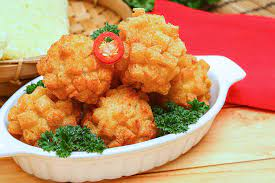

Bola udang

Bahan :
- 6 ekor udang
- 5 buah kentang sedang
- 2 siung bawang putih halus
- Garam,gula, merica dan perasa secukupnya
- 1 butir telur kocok
- Tepung panir/tepung roti secukupnya
Cara :
- Marinasi udang dengan bawang putih halus, arak, garam, gula, merica dan perasa secukupnya selama 15 menit.
- Iris tipis kentang kemudian kukus sampai lembut, angkat dan haluskan.
- Ambil sedikit adonan kentang kemudian kukus sampai lembut, angkat dan haluskan.
- Masukkan bola udang kedalam telur kocok kemudian ke dalam tepung panir/tepung roti sampai rata kemudian goreng dengan minyak banyak.
- Angkat dan siap disajikan.